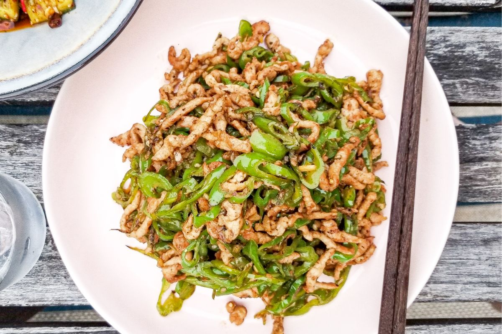

~Yummy~ Spicy Pepper Pork ~Yummy~

Description
Spicy Pepper Pork is a delicious and spicy dish that is perfect for those who love a little heat.
It is made with tender pork, bell peppers, and a variety of spices.
This dish is easy to make and is sure to satisfy your craving for something spicy.
Ingredients
- 1 lb pork loin, thinly sliced
- 1 red bell pepper, thinly sliced
- 1 green bell pepper, thinly sliced
- 1 yellow bell pepper, thinly sliced
- 1 onion, thinly sliced
- 2 cloves of garlic, minced
- 1 tbsp soy sauce
- 1 tbsp oyster sauce
- 1/2 tsp black pepper
- 2 tbsp vegetable oil
Steps
- Heat the vegetable oil in a large skillet over medium-high heat.
- Add the garlic and cook until fragrant.
- Add the pork and cook until browned.
- Add the bell peppers and onion and cook until softened.
- Add the soy sauce, oyster sauce, and black pepper.
- Stir to combine and cook for another 2-3 minutes.
- Season with salt and pepper to taste.
- Enjoy!